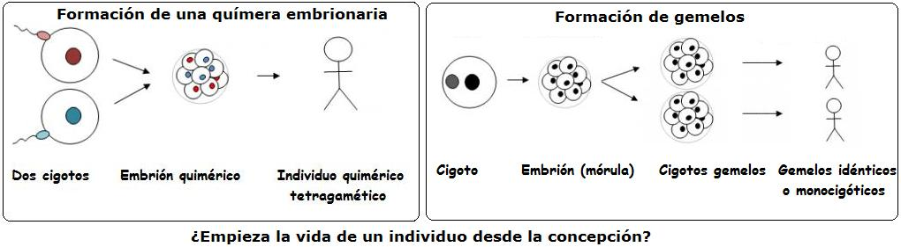
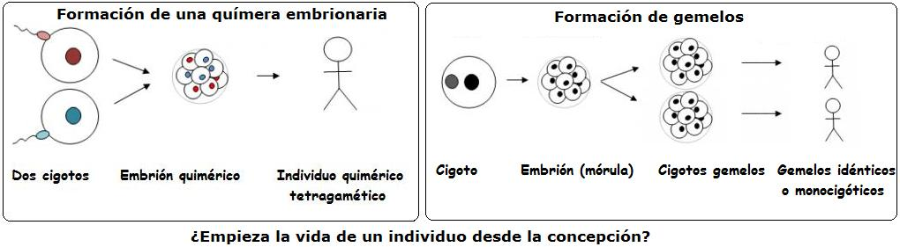

Este artículo ya ha sido publicado en la página de Escépticos Colombia , de la cual Hernán Toro forma parte.
El debate sobre el aborto es difícil por su carga emotiva. Quienes se oponen llaman homicidas a quienes lo practican. Por el contrario, quienes lo defienden postulan que el embrión no es una persona. Por eso, antes de decidir la naturaleza del embrión, hay que saber la realidad biológica sobre la reproducción. Sólo al comprenderla a fondo, se puede concluir sobre los argumentos propuestos. Este artículo pretende brindar precisión en algunos conceptos equívocos e informar de algunos detalles sorprendentes y poco conocidos [1] .

El homicidio es causar la muerte de una persona y por tanto es fundamental comprender qué es una “persona”. La exploración del campo semántico de esta palabra muestra características necesarias: individualidad, capacidad de pensar, experimentar sentimientos, tener autoconsciencia, etc. La naturaleza mental de estas cualidades determina una diferencia fundamental entre “ser humano” y “persona”. El primero es cualquier miembro nuestra especie en cualquier etapa de desarrollo; por el contrario, una persona es más que un ser humano: es un ser humano con al menos un mínimo de actividad cerebral. Por ejemplo, un óvulo fecundado (zigoto) es un ser humano pero no es una persona; por el contrario, un feto con más de 4 meses ya puede presentar actividad cerebral que permitiría considerarlo una persona en estado incipiente. Esta peculiaridad de que las personas se caracterizan por su vida mental, es la que valida el concepto de “muerte cerebral” de la medicina moderna: un ser humano puede estar vivo sin que viva la persona que otrora fue.
La postura del dios Bíblico sobre el aborto asombraría al creyente común [2] pero esto no obsta para que los opositores al aborto lo rechacen por creer en un “alma” infundida en el zigoto por Dios. Eso lo haría “una persona”. Creen también que su dotación genética se determina al unirse óvulo y espermatozoide (gametos) y eso lo haría ya “individuo humano”. Creen que al permitirle “el desarrollo natural”, se llega invariablemente a un bebé y por ello consideran su interrupción como un acto equiparable moralmente a un homicidio; esto hace que se opongan a las píldoras que evitan la implantación del embrión en el útero. De hecho, muchos creyentes sólo aceptan métodos de control natal “abiertos a la vida” (método del ritmo) porque lo contrario iría contra la Voluntad Perfecta de Dios para engendrar hijos. El extremo es la postura Católica de que “es ya un hombre aquél que lo será”, basada en una hipotética “persona en potencia” en el embrión.
Esta postura antiabortista desconoce hechos básicos de la reproducción humana, lo que los lleva a errores que se aclaran a continuación:
1). La dotación genética no se determina al momento de la unión de los gametos. La segunda división meiótica del óvulo ocurre sólo a partir del momento de dicha unión. Esa división recombina de manera aleatoria los genes aportados por la madre, de tal forma que ocurre una especie de “lotería genética” que dura hasta 24 horas a partir de la unión de los gametos. Como en dicho instante no hay identidad genética, no puede haber persona.
2). Ni siquiera cuando hay determinación genética, el destino natural del zigoto es formar un niño. Se estima que por fallos naturales en la implantación y abortos espontáneos, cerca del 60% de los zigotos se pierden sin que la mujer lo perciba. Si los zigotos fueran “personitas indefensas” estaríamos hablando de la mayor catástrofe de salud pública de toda la historia: la muerte continua y natural de cerca de dos terceras partes del relevo generacional en cada momento histórico, sin que ninguna confesión religiosa, ningún partido político, o ningún gremio médico emitiera su alerta, ni pidieran presupuesto nacional para investigar cómo reducir esta mortandad. El que incluso los médicos católicos antiabortistas se hagan los de la vista gorda ante este hecho, dejando morir “naturalmente” a todos esos embriones con tranquilidad, muestra algo evidente: en el fondo saben que el embrión no es una persona.
3). El que haya identidad genética no implica que haya una persona. Cuando hay división temprana, un solo zigoto puede dar origen a dos, tres, o más embriones viables: gemelos idénticos. De hecho, cuando se hace artificialmente en un laboratorio se llama “clonación”. Si la división de un embrión (ser humano) produce dos o más humanos viables, entonces el embrión como ser humano es divisible, lo que viola la definición más fundamental de individuo (que no se puede dividir). Si el embrión humano por división puede producir varios seres humanos, entonces el embrión es divisible y por tanto no es una persona.
 
Para asimilar lo anterior, los creyentes se inventan la explicación de que Dios infunde almas a los embriones divididos para formar “personitas”. Pero dejando a un lado el problema de cuál se queda el alma original y cuáles reciben almas nuevas, esto trae otro problema para el dogma de que la vida es un “don de Dios”. Si un genetista decide crear incontables clones de un embrión, ¿Dios crearía almas a voluntad del genetista, una para cada clon? ¿Donde queda la soberanía de Dios sobre la vida humana si crea almas a voluntad del genetista? ¿O acaso Dios no les crea almas por considerar abominable esta práctica, y el experimentador estaría creando vida humana sin alma? Los dogmas religiosos suelen desmoronarse ante la investigación moderna. Este choque es aún más fuerte cuando se considera la clonación a partir de células somáticas de un adulto: ¿Creará Dios almas humanas para embriones creados “abominablemente” a partir de células de un riñón o del cabello? Es comprensible que las religiones impidan la investigación con células pluripotenciales: esta tiene demasiadas consecuencias peligrosas para sus dogmas.
Hay fenómenos naturales más aterradores aún para el creyente en almas. Un par de embriones con dotación genética diferente, pueden fusionarse en un solo embrión conocido como “quimera”[3] . Estos individuos, cuando logran sobrevivir, tienen dos códigos genéticos distintos al mismo tiempo, y a veces tienen los dos sexos a la vez (hermafroditismo). El golpe teológico de este hecho es aún más terrible. ¿Qué ocurre con el par de almas cuando un par de zigotos se funden para dar origen a una quimera? ¿Queda un embrión con dos almas? ¿Estas se funden? ¿Qué sentido teológico puede tener la creación de un alma para luego fusionarla con otra o volverla a eliminar incluso antes de salir del vientre materno? Todas estas preguntas preocupantes para los creyentes son tan absurdas racionalmente como las discusiones medievales sobre el sexo de los ángeles. Estos mitos son irrelevantes desde el punto de vista científico e intrascendentes para la ética humana.
Queda demostrado que un zigoto o un embrión no es ni real, ni potencialmente, una persona: su desarrollo depende de circunstancias externas. Puede no implantarse o ser abortado naturalmente en un 60% de casos; puede dividirse para dar origen a otros embriones; dos embriones pueden fusionarse para dar origen a quimeras humanas, etc. Todo esto demuestra que el embrión no es un individuo humano, y por ende no es una persona. Todo el edificio teológico de la infusión del “alma humana” en la concepción se cae aparatosamente ante los hechos científicos. Irónicamente, Santo Tomás de Aquino señalaba la infusión del espíritu a los 40 días de la concepción, mientras que San Agustín de Hipona era más razonable al localizarla muy adelante en la gestación, sólo cuando el feto estaba animado, lo que tiende a coincidir con el concepto científico de cuándo podría comenzar a considerársele persona [4] .
¿Cuál debe ser una postura razonable, científica y ética respecto al aborto? Es simple. Toda la ciencia moderna ha establecido fuera de toda duda que la persona es el resultado del funcionamiento del cerebro. Cualquiera que, como este autor, haya tenido la tristeza de ver cómo seres amados se van diluyendo y desdibujando por un mal de Alzheimer, o quien haya visto el deterioro de la personalidad tras una lesión cerebral, llega a la misma conclusión de Héctor Abad Faciolince en su obra “El olvido que seremos”: el “espíritu” no sólo no es inmortal, sino que es más mortal que el cuerpo. Sin cerebro, no hay persona.
Eliminar al embrión mientras no haya un sustrato neuronal suficiente para albergar personalidad, no puede ser considerado homicidio por ninguna persona racional y ética. Es irrelevante que el paso de humano a persona sea gradual: hay momentos antes de los cuales es imposible que exista personalidad (3 meses), y otros después de los cuales ya es evidente que hay un feto que comienza a experimentar la vida intelectiva porque percibe su entorno, siente y reacciona (unos 4 meses). El límite para permitir el aborto debe estar antes de que haya un sistema cerebral activo, sin que importen en absoluto las razones que muevan a la mujer a tomar esta decisión; así es la acertada legislación recientemente aprobada en México. Cualquier intento de aborto después de esta etapa debería estar prohibido, excepto en casos donde estuviera en riesgo la vida de la madre.
Para terminar, es indispensable analizar el argumento más falaz de los esgrimidos en el debate sobre el aborto: el que dice que como el embrión es una persona en potencia, entonces su aborto es homicidio. Dicha postura, el núcleo de la postura cristiana contra el aborto, es una mentira por punta y punta. La primera mentira es afirmar que el embrión en etapas tempranas es una persona; ya se probó que puede no ser ninguna (aborto natural espontáneo en el 60% de los casos), puede terminar siendo varias (gemelos idénticos y clones), o incluso puede llegar a ser “media persona” (cada uno de los embriones que se fusionan en una quimera). Esto implica que el embrion ni siquiera es una persona en potencia. Pero supongamos que el embrión fuera una persona en potencia. ¿Eso lo hace ya lo mismo que una persona? No. Un mendigo con instinto y talento gerencial (millonario en potencia) no es un millonario. Una semilla (árbol en potencia) no es un árbol. Una persona viva (cadáver en potencia) no es un cadáver. La ciencia, la lógica y la razón son inflexibles: un embrión (persona en potencia) no es una persona.
Notas
Comenta ente artículo en el Blog Sindioses.
Volver a la sección Sociedad y religión
Comentarios
Comments powered by Disqus